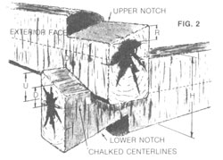

For chinking, Peter Gott recommends a mortar mix composed of three parts clay, three parts clean sand, and two parts portland cement. Smooth the mortar with a flexible trowel, undercutting the upper edge slightly. After the wood surfaces that will hold the mortar have been dampened (to prevent the dry wood from sucking moisture from the mud), mortar is pushed into the chinking cracks with a trowel. After smoothing, remove the tape. (Mortar stains on logs can be removed with a wire brush.)